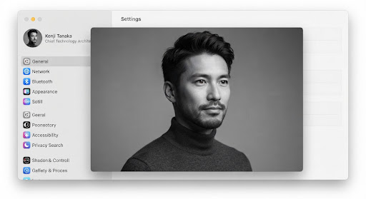

林知行
UID: TX-90248 本地主节点时序智配架构组 · 首席研发工程师 (Principal Systems Architect)
lock端对端 AES-256 加密
·
database本地 SQLite 存储
·
连续专注第 42 天
今日认知通量指数
insights
94.2
/ 100 峰值效能
深度专注保护区 (6.5h)
已完成 88%
专注效能历程与调度弹性 (近14天)
基于时序模型自动核算的专注深度与日程推演置信度
深度专注 (h)
弹性缓冲系数
03-01
03-03
03-05
03-07
03-09
03-11
今天 (03-13)
工作态负载分布
近期任务认知消耗结构模型
52%
深度系统编码
深度开发 (52%)
架构设计 (26%)
技术推演 (14%)
能量缓冲 (8%)